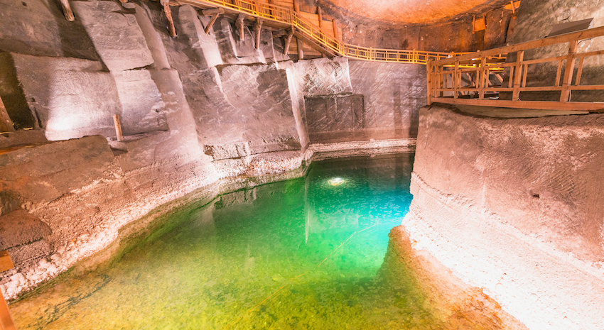

온천 수영장투어
스파 호텔은 여행 중 누적된 피로를 깨끗이 씻어내기 최적으로 케이블 카를 타고 올라가며 자코파네 최고의 풍경을 즐기고 5월까지 눈으로 덮여 있는 하이 타트라의 환상적인 절경을 즐긴 후 온천에서 몸을 녹이며 휴식을 취할 수 있다. 깊은 산속에서 실내외 수영장, 물 미끄럼틀, 월풀 욕조와 다양한 어트랙션을 즐길 수 있다. 또한 전문 마사지 서비스, 욕조, 온탕에서 다양한 효능을 자랑하는 지하 용출 미네랄 온천수에 몸을 담그며 진정한 의미의 휴식을 즐길 수 있다.